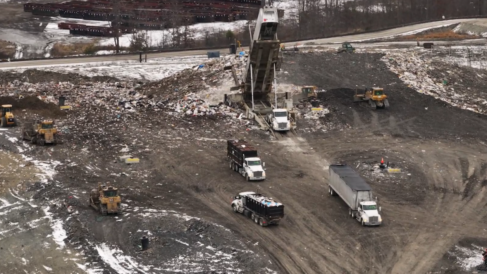

🔥 The Current Reality

Residents of Montgomery County are already suffering from the failures of the existing Rumpke landfill operations. Despite promises of odor control, the stench frequently permeates our neighborhoods, affecting our quality of life, property values, and health.
Rumpke has failed to adequately manage the current site. Expanding it now is not just irresponsible—it is a direct disregard for the well-being of our community.
Current News
🗺️ Affected Areas Map
The red circle represents the 15-mile diameter zone directly impacted by Rumpke's operations at 30 Larison Rd.
⚠️ The Devastation of Our Community
Plummeting Property Values
Homeowners in the south of the county are watching their life savings evaporate. Who wants to buy a home where you can't even open your windows? The Rumpke expansion is a death sentence for our local real estate market.
Uninhabitable Stench
The entire southern region of Montgomery County is becoming uninhabitable. The persistent, nauseating stench of rotting waste and industrial chemicals traps residents inside their own homes, stealing their right to fresh air.
Soil & Health Fears
Whether the fears are founded or not, the community is terrified of the long-term detriment to our soil. The potential for leachate leaks and chemical runoff threatens to poison the very ground our children play on and our farmers rely on.
"We are being forced out of our homes by a corporation that prioritizes profit over people."
Environmental Impact
An expansion threatens our local ecosystem, water quality, and the rural character of Montgomery County.
Community Health
Increased traffic, noise, and persistent odors pose significant risks to the health and safety of our residents.